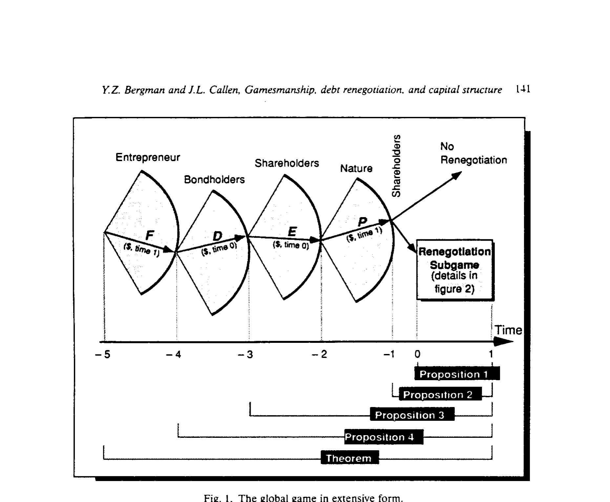
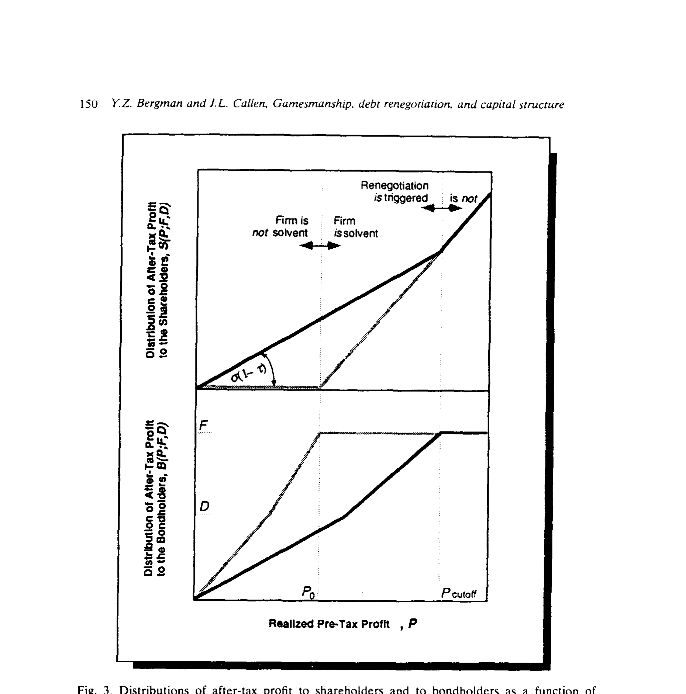
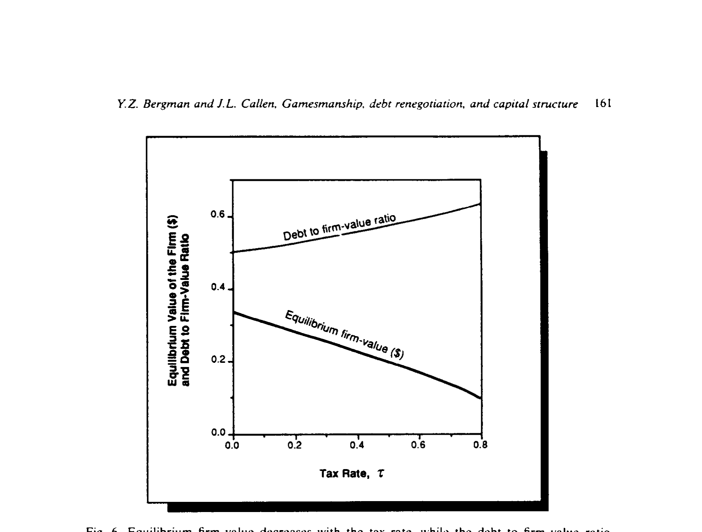
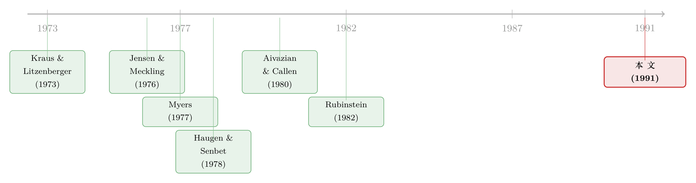

把公司「跑垮」当筹码：股东如何在谈判桌上逼债主让步
本文读的是 Bergman & Callen (1991, Journal of Financial Economics)：当公司陷入困境，股东（管理层）会威胁要「故意把公司经营垮掉」来逼债权人减债——债权人预料到这一点，于是给公司的举债能力划下了一条低于公司价值的天花板。一旦再给债务加上税收优惠，即便完全没有真实破产成本，公司也会出现一个内部最优资本结构。
1 一桩二十年的悬案：债，到底会不会逼公司「不投资」
故事要从一个让公司金融头疼了很久的命题说起。
Myers（1977）有一个著名的论断：公司一旦背上债务，就会产生投资不足 (underinvestment) 的问题。道理很直白——假如一个未来的投资机会，赚到的钱大部分要先去填债主的窟窿、轮不到股东，那么从股东的算盘上看，这个项目「不值得做」，于是公司宁可放着好项目不投。债务，像一道悬在头顶的阴影，让公司放弃了本该抓住的增长。
这个故事听上去无懈可击。可紧接着，Aivazian 和 Callen（1980）提出了一个自然的反驳：既然放弃好项目对股东和债主都是损失，那他们为什么不坐下来谈一谈？股东说「你减我一点债，我就去投这个项目」，债主一算账，与其眼睁睁看项目泡汤，不如让一步。只要能重新谈判 (renegotiation)，效率就能恢复，Myers 担心的投资不足根本不会真正发生。
于是问题就僵在这里：到底是 Myers 对，还是 Aivazian–Callen 对？债务，究竟是不是公司投资的绊脚石？
Bergman 和 Callen 这篇 1991 年的论文，没有简单地站队。它做的事更狠：把双方拉进同一个博弈均衡里，让「投资不足」和「重新谈判」不再是两个对立的故事，而是同一枚硬币的两面。而真正的反转在于——它告诉你，那个「投资不足」根本不是意外，它是股东手里攥着的一把刀。
2 核心反转：威胁本身，就是武器
先把这篇论文最反直觉、也最核心的一句话点出来：
股东（管理层）并不是「不小心」放弃了好项目，而是「故意」威胁要把公司经营垮，以此当成谈判桌上的筹码，逼债权人在债务上让步。
设想一家公司，债务到期日临近，运气不好，账面价值勉强够还本金。这时候管理层可以选择一条「次优投资路径」——明面上是经营失误，实则是有意为之：每拖一轮谈判，公司的盈利能力就进一步恶化 (deteriorate) 一截。管理层把这个恶化过程当成一句潜台词递给债主：「你不减债，我就让这家公司继续烂下去，到期那天大家一起吃亏。」
这就是 Myers 笔下「投资不足」的真身——它不是债务带来的副作用，而是股东在债务谈判中主动选择的施压手段。论文用了两个生动的现实例子：以色列的基布兹（Kibbutzim）公社谈判团队，干脆把这套伎俩直白地叫做「焚烧还款能力 (burning of repayment power)」；还有那家叫 Koor 的工会企业，威胁要毁掉的「项目」，竟然是一项政府用来救它免于破产的援助计划。
这把「刀」并不总是能砍下去。论文强调：只有当公司价值跌到某个临界点以下，这种自残式的威胁才真的对股东有利；在那之上，股东砍下去自己也疼，所以威胁不可信。换句话说，可信性 (credibility) 是整个故事的命门——这也是为什么后文一定要用子博弈完美均衡来刻画它。
接着，一个自然的问题是：债权人是傻子吗？他们当然不是。债权人理性地预料到股东将来会玩这一手。于是在买债券的那一刻，他们就会想：如果公司把债务面值定得越高、投资计划却不变，那么将来债务被「谈崩、谈到对我不利」的概率就越大。预料到这一层，债权人愿意付的钱就有了上限——这条上限，就是公司的举债能力 (debt capacity)，而它严格小于公司价值。
到这里，论文的骨架已经立起来了。下面我们把它一步步拆开。
3 模型：一棵博弈树，与一笔「边谈边缩水」的蛋糕
这是一篇模型论文，它的优雅恰恰藏在结构里。让我们按论文的顺序，把它当成一个完全且完美信息（带不确定性）的非合作博弈来读。
3.1 三个玩家与时间线
舞台上有三类风险中性的玩家：一个企业家 (entrepreneur)、一群债权人 (bondholders)、一群股东 (shareholders)。（把企业家从股东里单拎出来，只是为了叙述方便。）为了让债务有存在的理由，论文假设公司利润按税率 τ 征税，而利息支出可抵税；没有个人税。
时间线（如图 1）是这样走的：在 t = -5，企业家把项目装进一家新公司，向竞争性资本市场发两种证券——承诺到期（t = 1）支付面值 F 的纯贴现债券，以及控制公司的股票。企业家像一个斯塔克伯格领导者 (von Stackelberg leader)，先定下 F。随后债权人出价 D，股东出价 E。等到债券和股票都卖完、公司真实的潜在利润 P 被「自然」揭晓之后，股东率先决定：要不要发起债务重新谈判？

Figure 1: The global game in extensive form
如果不谈，公司一路按最优投资走到 t = 1，赚到 P，还债主 F，交税，剩下的归股东。如果谈，就触发那个关键的讨价还价子博弈。
3.2 和 Rubinstein 不一样的地方：蛋糕的大小，是谈出来的
重新谈判子博弈，论文借用了 Rubinstein（1982）那个经典的序贯讨价还价 (sequential bargaining) 框架：两个人就如何瓜分一块不断缩水的蛋糕，轮流出价、还价，一方提议、另一方接受或反提。每轮拖延，蛋糕就缩小一点——这里的「缩小」，正是前面说的盈利能力恶化：第 n 轮时，公司的税前利润只剩 δ_n P，其中 δ_n = d[(N-n)Δ]，d(·) 是那条从 d(0)=1 开始单调递减的恶化函数 (deterioration function)。
但这里有一个本质区别，也是这篇论文真正的技术贡献：在 Rubinstein 的世界里，蛋糕的大小是外生给定的；而在这里，被瓜分的蛋糕大小（税后利润）和怎么分这块蛋糕，必须同时决定。 为什么？因为税法规定，可抵扣的利息是「债权人实际收到的、超过他当初买债所付 D 的那部分」，即 max(B_n - D, 0)。于是债权人分到多少，直接决定了公司交多少税，从而决定了那块「税后利润」蛋糕到底有多大。
这就是论文称之为分割可行性条件 (partition-feasibility condition) 的核心方程（论文式(1)）。我把它做成一张带标注的图，看清每一块的含义：
请注意这个等式右边出现了 B_n——也就是说，蛋糕（左边的 S_n+B_n）依赖于怎么切（右边的 B_n）。这正是它与 Rubinstein 的分水岭：分多少和分什么，缠在了一起。
3.3 用反向归纳，求出唯一的子博弈完美均衡
因为信息是完美的，论文用反向归纳 (backwards induction) 一层层往回推，从最末端的谈判子博弈（命题 1），到股东要不要发起谈判（命题 2），再到股东定价、债权人定价、企业家定 F（命题 3、4 与定理），最终拼出唯一的子博弈完美均衡 (subgame-perfect equilibrium, SPE)。这里之所以一定要用 SPE 而不是普通的纳什均衡，就是为了保证股东的威胁是可信的：如果不是子博弈完美，那么在某些节点上股东根本没有动机真的去毁掉公司价值，债权人也就不会把威胁当回事（关于「可信承诺」如何反过来塑造证券设计，可参见《威胁要「全赎回」，债主该不该信？》）。
均衡的结论干净得出奇：在开局那一轮，股东提议给自己 S 、给债权人 B ，债权人立刻同意——谈判其实一轮就结束了，公司价值并没有真的被毁掉。威胁之所以有用，恰恰是因为它可信到不必兑现。
3.4 那个决定一切的「拐点」
真正关键的一步，在命题 2 给出的重新谈判临界值 (renegotiation cutoff)。它回答了：利润实现值 P 低到什么程度，股东才划算去掀桌子？
在临界点上，股东对「谈」与「不谈」恰好无差异。把两种情形下股东拿到的钱令其相等：
$$ \alpha(1-\tau)P_{\text{cutoff}} = (1-\tau)\big(P_{\text{cutoff}} - F\big) - \tau D $$
左边是发起谈判、按谈判分成 α 拿走的那部分；右边是老老实实还债 F、交税后股东剩下的 (1-τ)(P-F) - τD。这里的 α ∈ (0,1) 是讨价还价决定的股东分成比例，它越大，意味着股东能威胁造成的损害（由恶化函数 d 刻画）越狠、谈判筹码越重。解出来：
$$ P_{\text{cutoff}}(F,D) = \frac{F}{1-\alpha} + \frac{\tau D}{(1-\tau)(1-\alpha)} $$
于是股东在均衡里的总收益就有了一个带拐点的形状（论文式(7)）：
$$ S(P; F, D) = \begin{cases} \alpha(1-\tau)P, & 0 \le P < P_{\text{cutoff}}(F,D), \\[4pt] (1-\tau)(P-F) - \tau D, & P_{\text{cutoff}}(F,D) \le P. \end{cases} $$
债权人的收益 B(P;F,D) 是镜像的：当利润足够高（P ≥ P_cutoff）公司乖乖还满 F；当利润落进低区间，债权人就被谈判「咬」掉一块，只能拿到 (1-α)(1-τ)P；只有在公司彻底资不抵债的最底端，才按严格优先级 (absolute priority) 清算。
图 3 把这两条收益曲线（深色）和教科书里「应该长成的样子」（灰色）画在一起，那个向下凹的缺口，就是股东用威胁从债权人兜里拿走的钱。

Figure 3: Distributions of after-tax profit to shareholders and to bondholders as a function of
它的解读是：当利润低到让公司资不抵债时，股东反正一无所有，索性放手一谈；当利润稍高、公司仍有偿付能力 (solvent) 时，股东和债主都会因为真把威胁执行而受损——但只要股东自己的潜在损失「足够小」，威胁就会被传达出去，债权人也就会对「合理」的要求让步。这，就是现实中大量债务重组的底层逻辑。
4 从「拐点」到「天花板」：举债能力与内部最优资本结构
现在把镜头拉远。债权人在 t = -4 出价时，已经把上面这套未来的「被咬」预期算进去了。竞争性市场要求债权人和股东的净现值为零，再叠加一个铁律——债权人永远拿不到超过面值，即 B ≤ F——于是必然有
$$ D = \frac{\mathbb{E}B}{1+r} < F. $$
债权人付出的 D 严格小于面值 F。这个不等式看似平淡，含义却极重：公司能真正「卖出去」的债务（拿到手的现金 D），有一条结结实实的上限。论文称之为举债能力，而它低于公司价值。
接下来是全文的落点。在一个除此之外没有任何摩擦的世界里：
- 只要债务水平低于举债能力，资本结构无关紧要（Modigliani–Miller 的味道）；超过这条线的债务，则根本卖不出去。
- 可一旦给债务引入一点优势——本文用的是利息的税收抵扣——一个内部最优资本结构就出现了：最优债务和最优股权都为正，而且债务会被一路顶到举债能力这条天花板。
这就是它最漂亮的地方：它得到内部最优资本结构，靠的根本不是破产成本。
传统的权衡理论（Kraus & Litzenberger 1973；Scott 1976；Kim 1978）说，是破产成本拦住了公司「全额举债」。可问题在于，要让这个故事成立，真实的破产成本必须大得离谱——因为破产概率在经验上很小，只有成本足够大，二者相乘的「预期破产成本」才显著。而 Warner（1977）的经验证据和 Haugen & Senbet（1978, 1988）的理论都对破产成本的重要性提出了质疑。Bergman–Callen 的模型则给出了一条全新的出路：哪怕破产从未真正发生，公司也有内部最优资本结构。 那条天花板不是破产成本砌的，而是债权人对「将来要被股东讹一笔」的理性预期砌的。
图 6 给出了比较静态：随着税率 τ 上升，均衡的公司价值下降，而债务占公司价值的比率上升——税收优势越大，公司越有动力把债务顶到举债能力的上限。

Figure 6: Equilibrium firm value decreases with the tax rate, while the debt to firm value ratio
这套机制还顺手解释了两个经验现象：
- 跨行业的杠杆差异。 拥有大量无形资产 (intangible assets) 的公司，债务–股权比往往偏低（Brealey & Myers 1988, p.407）。本文的解释别具一格：这类公司的管理层更善于在重组里把价值从债主手里谈走（无形资产高度依赖管理层的特定技能，债主想换人也换不动），于是债权人愿意借的更少，公司在均衡里只能少借。
- 那些看似「多余」的债务契约。 有些契约要求公司不得采取「同时伤害股东和债主」的行动，乍看莫名其妙——既然损人不利己，何必明文禁止？本文的回答是：这些契约的真正用途，是事前削弱管理层在重组中的谈判筹码，从而抬高举债能力，进而（因为债务有税收好处）抬高公司价值。换句话说，股东主动给自己戴上镣铐，是为了能借到更多的钱（这种「自缚式」契约的逻辑，与《把「降级就还钱」写进债券契约：一个让股东自己戴上镣铐的故事》如出一辙）。
5 文献脉络
把这篇论文放回它所处的坐标系，会看得更清楚。
最上游，是资本结构无关性的背景与两条经典支流的对撞：一边是 Myers（1977）的投资不足——债务诱发次优投资；另一边是 Aivazian & Callen（1980）的重新谈判——谈判恢复效率。再往上追，是 Jensen & Meckling（1976）奠定的股东–债权人代理冲突的经典框架（关于这条主线的当代回望，可参见《债务这副药，为什么不能全吃？——重读 Jensen 和 Meckling 五十年》）。
与此并行的，是破产成本权衡这一脉：Kraus & Litzenberger（1973）、Scott（1976）、Kim（1978）用破产成本解释为何不全额举债；而 Warner（1977）、Haugen & Senbet（1978, 1988）则质疑破产成本是否真有那么重要。Bergman–Callen 正是踩着这个「破产成本可能不重要」的缺口，另起炉灶。
方法论上，它把 Rubinstein（1982）的序贯讨价还价、以及 Selten（1975）的子博弈完美均衡概念，嫁接到了债务重组里——并通过「蛋糕大小内生于分割」这一改造，让博弈论真正长在了公司金融的土壤上。

这篇 1991 年的论文，因此既是 Myers 与 Aivazian–Callen 之争的调和与综合，又是对破产成本权衡理论的一次侧翼包抄。它把「投资不足」从一个被动的扭曲，重新解读为一个主动的、可信的谈判威胁——这个视角，后来在「债务即谈判筹码」的研究里不断被回响（例如《债，竟成了老板谈判桌上的底牌——重读「债务谈判渠道」与失业》；以及把「要挟价值」直接写进证券定价的《同一只债券，凭什么有人多拿五倍？》）。
6 评论与延伸（Q&A + 研究方向）
(a) 几个可能的疑问
Q：这篇论文凭什么说自己「调和」了 Myers 和 Aivazian–Callen，而不是选边站？
因为它把两者装进了同一个均衡。Myers 的「投资不足」在模型里确实发生（作为威胁），Aivazian–Callen 的「重新谈判」也确实发生（且一轮即成）——但两者都不是终点。终点是：理性的债权人事前把这套博弈定价进了
D，于是真正被改变的是举债能力和资本结构。投资不足与重新谈判不再矛盾，它们只是同一均衡路径上的两个环节。
Q：均衡里谈判「一轮就结束、价值没真被毁」，那这套威胁到底怎么影响公司？
关键在「事前 vs 事后」。事后看，公司价值毫发无损（威胁可信到不必执行）。但事中，威胁重新分配了
S和B；而事前，债权人预见到这种再分配，只肯付更低的D。所以威胁的全部经济后果，在债券发行那一刻就被定价了，体现为低于公司价值的举债能力。
Q：为什么破产成本这条老路被作者绕开了？绕开它换来了什么？
因为破产成本要在经验上「够大」才能撑起内部最优结构，而 Warner（1977）和 Haugen–Senbet（1978, 1988）让这个前提变得可疑。绕开它换来的是鲁棒性：本文的内部最优结构在「破产从未发生」时依然成立，机制来自谈判威胁而非清算损失。代价是，它需要管理层能可信地、且不被法庭抓住地实施次优投资。
Q：那些「连股东都伤」的债务契约，真有必要吗？
在这个模型里有必要，而且逻辑很反直觉：股东愿意事前接受这种自缚式契约，因为它削弱了自己将来的谈判筹码、抬高了举债能力，从而（借助税盾）抬高了公司价值——这笔好处最终落回股东自己口袋。它解释了现实中那些「看似多余」的契约为何存在。
Q：法院和强制破产为什么在模型里几乎缺席？这是不是太强的假设？
论文专门花了一节（第 2 节）论证这个假设的现实性：法院极少应债权人之请把偿债中的公司强制破产；要任命接管人，债权人须证明「欺诈、不诚实、无能或严重管理失当」，单纯的「经营失误」不够格；况且接管人往往是糟糕的经营者，任命他本身可能就等于替股东兑现了威胁。所以「法庭看不见这场博弈」是一个有现实支撑、但仍可被质疑的关键假设。
Q：风险中性和「无个人税」这些简化，会不会改变结论？
作者明说风险厌恶不改变主要结论；个人税被略去是为了让利息税盾成为债务优势的唯一来源，从而把机制讲干净。真正吃重的假设不是这些，而是完全且完美信息——下面会谈到，这恰恰是后续研究最该松动的地方。
(b) 几个可能的研究问题与提案
1. 把不完全信息塞进这场谈判。
【经济故事】本文是完全且完美信息，所以谈判一轮即成、不产生真实损失。但现实中债权人未必知道公司恶化函数 d(·) 的真实形状，也未必知道管理层威胁的真实可信度。引入不对称信息（沿 Fudenberg–Tirole 1983、Grossman–Perry 1986 的路线），谈判就可能真的破裂、价值真的被毁，从而把「事后无损」变成「事后有损」。
【可行性】中。纯理论扩展，doable，但要小心多重均衡与精炼概念的选择；经验上验证「谈判破裂造成的价值损失」需要困境重组的细颗粒数据。
2. 用公司债微观数据检验「举债能力 < 公司价值」这条天花板。 【经济故事】模型给出一个可检验的横截面预测：管理层谈判筹码越强（无形资产占比越高、人力资本越关键），举债能力越低、均衡杠杆越低。 【可行性】中到高。可用 Compustat 衡量无形资产/研发占比，配合债券发行数据；识别上的难点是「谈判筹码」无法直接观测，需要找代理变量或制度冲击。与《老板不想借钱，债却替他保住了位子》的思路可以互补。
3. 「自缚式契约」的因果检验。 【经济故事】本文预测，限制管理层谈判能力的债务契约会抬高举债能力、进而抬高公司价值与发行规模。 【可行性】中。需要把债券契约条款文本化（如 Smith & Warner 1979 的分类传统），再看契约严格度与发行利差/规模的关系；识别担忧是契约本身内生于公司质量，理想情况要找一个外生改变契约可得性的冲击。
4. 把这套「威胁—举债能力」机制接到信用利差与流动性上。 【经济故事】如果债权人对「将来被讹」的预期是定价的一部分，那么在重组更容易、股东谈判力更强的环境（如对债权人不友好的破产法辖区），信用利差里应当含有一块「谈判风险溢价」。 【可行性】中。跨国/跨州破产法差异 + 公司债利差数据可做；难点是把「谈判风险」从违约风险、流动性溢价里干净地剥离出来。
5. 外资债权人 vs 本地债权人的谈判筹码差异。 【经济故事】跨境持有人在困境重组中往往协调成本更高、信息更弱，可能更容易被管理层的威胁「咬」到——这会反过来压低对外资发行的举债能力。 【可行性】中到低。需要按债权人国籍/类型拆分的持有人数据（往往不可得），识别上也要排除汇率与税收的混淆，是个有意思但偏难的方向。
7 参考文献
Aivazian, V. A., & Callen, J. L. (1980). Corporate leverage and growth: The game theoretic issues. Journal of Financial Economics 8, 379–399.
Bergman, Y. Z., & Callen, J. L. (1991). Opportunistic underinvestment in debt renegotiation and capital structure. Journal of Financial Economics 29(2), 137–171.
Brealey, R., & Myers, S. (1988). Corporate Finance. McGraw Hill, New York, NY.
Haugen, R. A., & Senbet, L. W. (1978). The insignificance of bankruptcy costs to the theory of optimal capital structure. Journal of Finance 33, 383–393.
Haugen, R. A., & Senbet, L. W. (1988). Bankruptcy and agency costs: Their significance to optimal capital structure. Journal of Financial and Quantitative Analysis 23, 27–38.
Jensen, M. C., & Meckling, W. H. (1976). Theory of the firm: Managerial behavior, agency costs and ownership structure. Journal of Financial Economics 3, 305–360.
Kim, E. H. (1978). A mean variance theory of optimal capital structure and corporate debt capacity. Journal of Finance 33, 45–63.
Kraus, A., & Litzenberger, R. (1973). A state preference model of optimal financial leverage. Journal of Finance 28, 911–922.
Myers, S. C. (1977). Determinants of corporate borrowing. Journal of Financial Economics 5, 147–175.
Rubinstein, A. (1982). Perfect equilibrium in a bargaining model. Econometrica 50, 97–109.
Scott, J. H. (1976). A theory of optimal capital structure. Bell Journal of Economics 7, 33–54.
Selten, R. (1975). Re-examination of the perfectness concept for equilibrium points in extensive games. International Journal of Game Theory 4, 25–55.
Smith, C. W., & Warner, J. B. (1979). On financial contracting: An analysis of bond covenants. Journal of Financial Economics 7, 117–161.
Warner, J. B. (1977). Bankruptcy, absolute priority, and the pricing of risky debt claims. Journal of Financial Economics 4, 239–276.